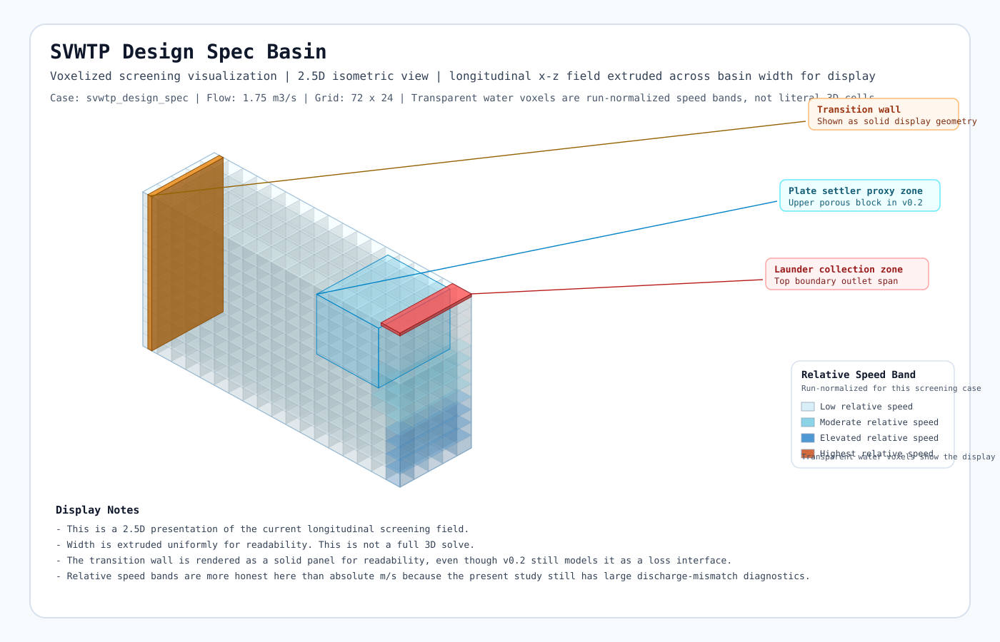

Side-by-side review of the current longitudinal screening views. These are 2.5D presentation renders of 2D fields, not full 3D simulations.

Use this pair to compare qualitative redistribution, wall effect, plate-settler approach pattern, and launder-proxy differences.
The display remains screening-oriented: transparent voxels show run-normalized relative speed bands rather than field-credible absolute m/s values.